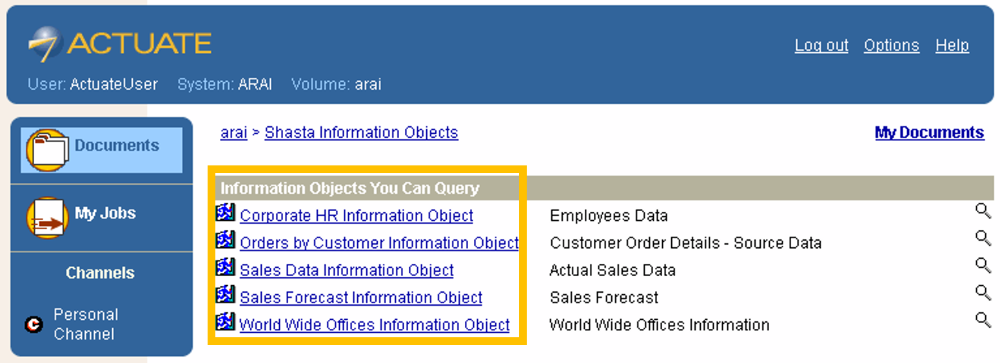
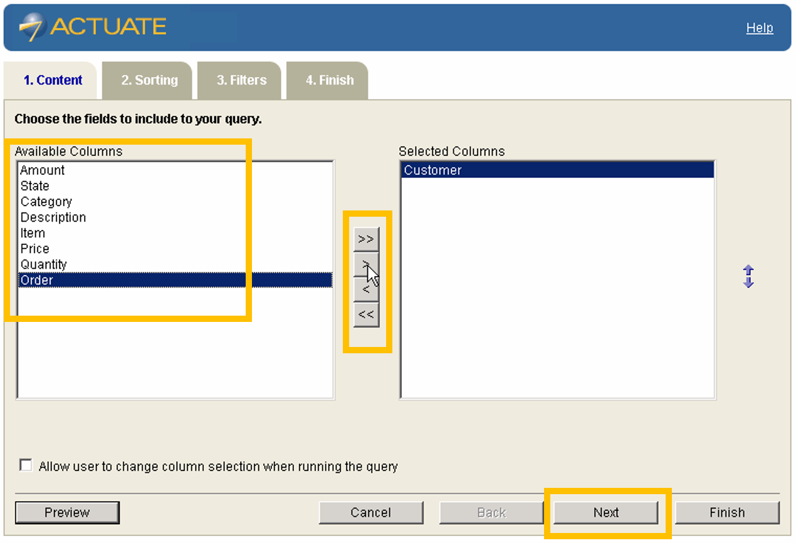
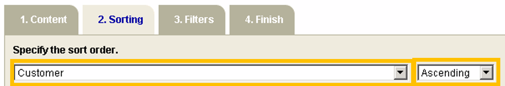
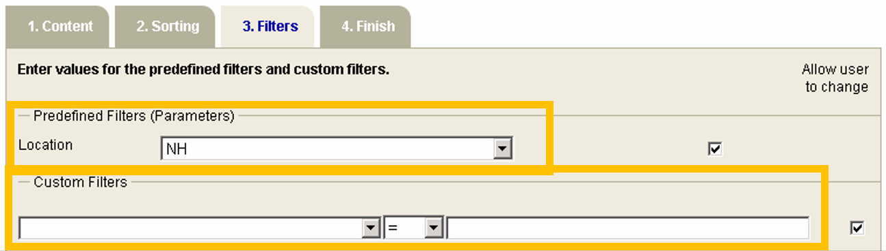
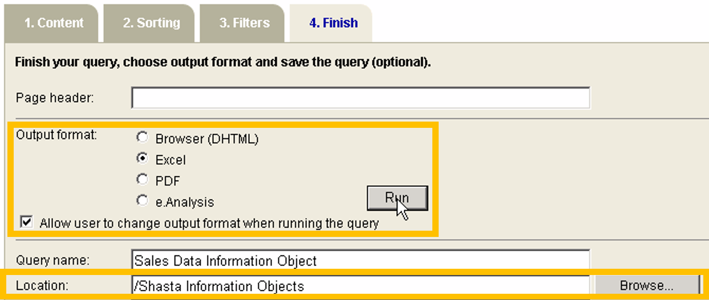

I needed to adapt a video tutorial into written instructions for an unfamiliar software product. I wrote this new content in my own words. The content enables users to easily find, understand, and act upon instructions for querying a database with the product.
How I Wrote These Instructions
I reimagined the video tutorial as a set of organized, repeatable instructions:
I divided each major task into its own set of instructions to simplify and streamline information delivery.
I chunked content with headings, lists, and note boxes so users can quickly locate and absorb the information they need.
I limited each task to a manageable set of steps.
I established a consistent structure for each task:
Subheadings identify each task.
Numbered lists highlight instructions.
Each list item contains only one step.
Supplementary information appears separate from the listed steps.
I included screenshots to highlight interface elements and layouts.
I produced software documentation for a real-world product.
I omitted some product features as specified by the project requirements.
This project is in no way affiliated with, sponsored by, endorsed by, nor authored by Actuate Corporation or Open Text Corporation.
Accessing Data with Actuate Query
You can access data from your database with Actuate Query by querying a relevant information object.
Choose an Information Object
Begin by choosing an information object that contains the data you need:
Log into the Actuate Query dashboard with your web browser.
Click the name of the information object that you want to query (see Figure 1).
Figure 1: The Actuate Query dashboard displays available information objects.
Choose Which Fields to Include in the Query
After selecting an information object, you will arrive at the Content tab (see Figure 2). Here you can select any of the information object’s data fields (AKA columns) that you want to include in your query:
Click the name of a field under Available Columns to highlight that field.
Click > to move that field under Selected Columns.
Repeat steps 1–2 for each field that you wish to include in your query.
Tip
You can also manage field selection with these buttons:
Click >> to select all available fields.
Click << to deselect all fields.
Highlight a selected field and click < to deselect that field.
Confirm your selection(s) by clicking Next near the bottom of the tab.
Figure 2: The Content tab displays all available and selected data fields, which are referred to here as columns.
Choose the Sort Order of Data
After selecting data fields, you will arrive at the Sorting tab (see Figure 3). Here you can specify the sort order of the data:
From the first dropdown list under Specify the sort order, choose a field for sorting data.
From the second dropdown list under Specify the sort order, choose an order for sorting data (such as by ascending or descending order).
Confirm the sort order by clicking Next near the bottom of the tab.
Figure 3: The Sorting tab displays dropdown lists for specifying the sort order of data.
Choose Filters to Narrow Query Results
After specifying the sort order, you will arrive at the Filters tab (see Figure 4). Here you can narrow the query results.
Figure 4: The Filters tab displays dropdown lists for defining filters.
Filter Data by Location
You can filter data by location:
From the dropdown list under Predefined Filters (Parameters), choose a location by abbreviated state name (such as NH, NY, or WA).
Filter Data by Custom Filters
You can filter data by custom filters:
From the three drop-down menus under Custom Filters, choose criteria to filter data by.
Apply Filters
You can apply filters to the query:
Click Next near the bottom of the tab.
Run the Query
After choosing filters, you will arrive at the Finish tab (see Figure 5).
Tip
If you need to return to a previous tab to change any settings, click Back near the bottom of this tab before running the query.
You can run the query from the Finish tab:
Select an output type by clicking that output’s radio button.
Tip
You can also specify the following:
the page header name in the Page Header field
the query name in the Query Name field
In the Location field, set the location to save the query in.
Tip
Click Browse to locate a network or local file folder.
Click Run to query the database.
Note
The query will save to the location specified in the Location field.
To access and analyze the queried data, view the saved query with software that can open the output type you chose in step 1.
Figure 5: The Finish tab displays options for running and saving the query.